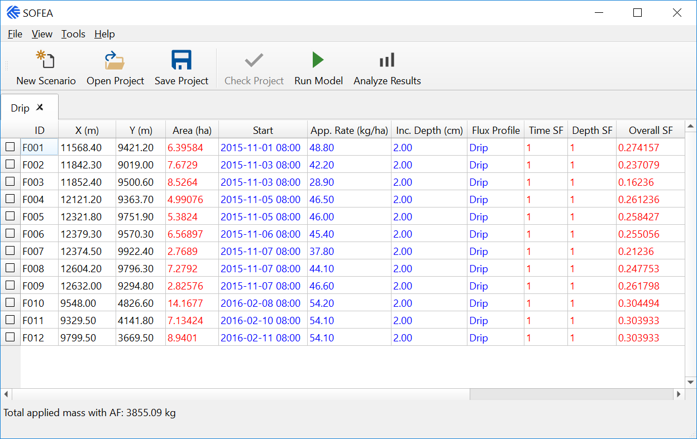
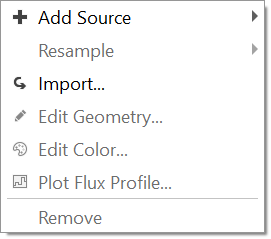

Managing Sources¶
As described in Creating Scenarios, there are several ways to add a Source Group to a Scenario. Two options can be found through the Scenario Context Menu, accessed by right clicking a scenario in the Project Browser:
- Add Source Group
Creates a new, empty source group.
- Import Retrospective Data
Creates a new source group by importing sources from a CSV file. Sample CSV files are included in the examples directory of the application.
A third option to add a Source Group to a Scenario is through the Source Group Context Menu, accessed by right-clicking a Source Group within a Scenario:
- Clone
Creates a duplicate source group in the same scenario.
To manage the sources within the source group, right-click the Source Group name and select Show Source Table. This will open a table where sources can be added or removed and source properties can be viewed and edited.
{kind=link}
By right-clicking anywhere in the source table, the Source Context Menu becomes available:
{kind=link}
- Add Source
Opens a submenu to add new sources with the following types:
Area Source corresponding to
AREAin AERMODCircular Source corresponding to
AREACIRCin AERMODPolygon Source corresponding to
AREAPOLYin AERMODThe default coordinates are set to Xs = 0 m and Ys = 0 m for the southwest corner of the rectangular area or center of the circle, and Zs = 0 m for an optional elevation of the source (
SO LOCATIONkeyword in AERMOD). The default source parameters are set to Aremis = 1 g/(s m2) for area source emission rate, Relhgt = 0 m for release height above ground, and area is defined as either square area 100 m by 100 m in size or circular area with radius of 100 m (SO SRCPARAMkeyword in AERMOD). You can edit the starting coordinates by double clicking in the source table, or selecting Edit Geometry.- Resample
Opens a submenu with the following options for resampling:
Application Start
Application Rate
Incorporation Depth
Flux Profile
- Import
Adds additional sources from a GIS shapefile or AERMOD input file.
- Edit Geometry
View and edit geometry of each individual source.
- Edit Color
Edit the color of one or more sources. Sources will be drawn using in the Receptor Editor using the selected color.
- Plot Flux Profile
Plot the scaled flux profile corresponding to the selected reference flux profile for the source.
- Remove
Remove a highlighted source from a list of sources.
If the source group is empty and sources are to be added manually, the Source Context Menu provides only Add Source and Import options.